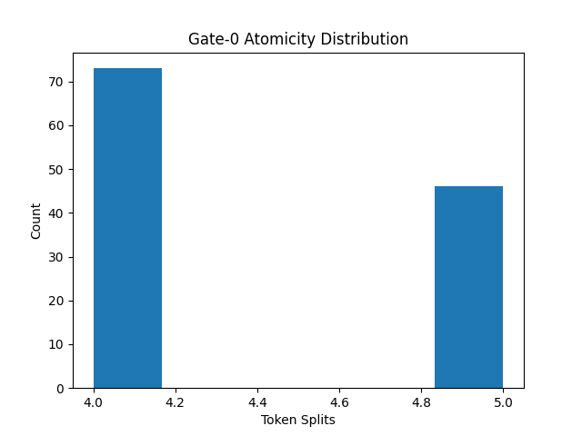

{
"version": "1.6",
"timestamp": "2026-01-28T18:25:19.677489Z",
"model": "sentence-transformers/all-MiniLM-L6-v2",
"architecture": "BertModel'>",
"atomicity_rate": 0.0,
"mu_separation": null,
"drift_curve": null,
"verdict": "ATOMICITY_FAIL"
}
